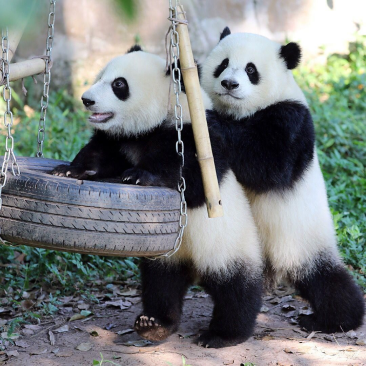
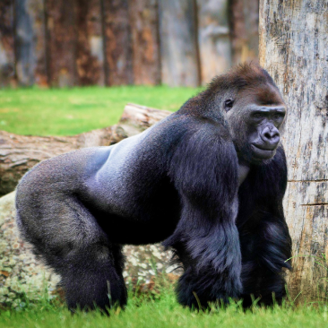

Watch
your
favorite
animal
online

- The Backstage of the
Wilderness World. - The site was founded on the basis of a volunteer movement to protect and care for animals.
- How it works
- The main goal is to help the animals, as well as the nature reserves and zoos where they are kept. We are currently working on video projects targeting pandas in China, eagles on an island near Los Angeles, alligators in Florida and gorillas in the Congo. These have a total of more than 1,500 mammals and reptiles.



Giant pandas
Native to Southwest China
Eagles
Native to South America

Gorillas
Native to Congo

Two-toed Sloth
Mesoamerica, South America
Cheetahs
Native to Africa

Penguins
Native to Antarctica
Giant pandas
Native to Southwest China
Eagles
Native to South America
Gorillas
Native to Congo
Two-toed Sloth
Mesoamerica, South America
Cheetahs
Native to Africa
Penguins
Native to Antarctica


Pick and feed a friend
We know the animals bring you joy, and in these extraordinary times, we're glad.
During a time when the COVID-19 epidemic is touching all of our lives, we're proud and glad that people around the world find joy in PetStory.
Even though the zoo has reopened, we need you now more than ever to help us deal with these problems. Please consider a gift to our Emergency Support Fund.
How it works

Pay with card
Payment goes to the zoo

Your favourite animal gets delicious dish